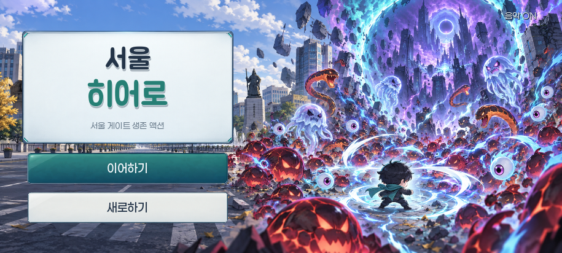
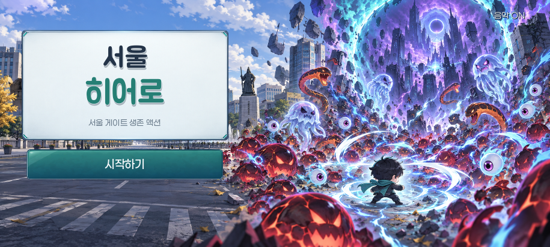
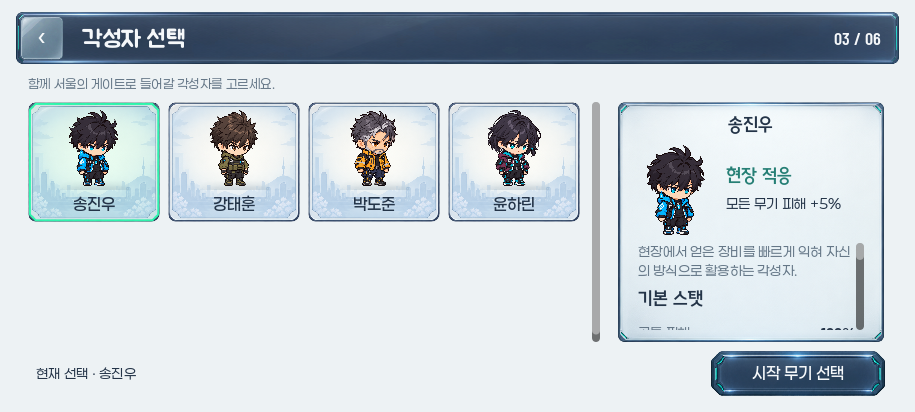
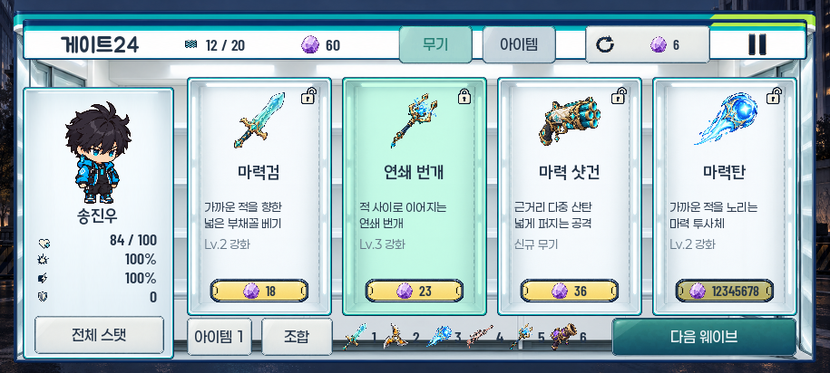

915×412 · 새 PNG 소재 검토 · 독립 Godot 렌더링
큰 정보창은 유지하고, 짧은 조작은 가볍게
타이틀을 도시 작전풍으로 맞추고, 뒤로가기·탭·보조 버튼·진행 버튼에 각기 다른 얇은 PNG 소재를 사용했습니다. 글꼴과 조작 크기는 유지했습니다.
용도별 얇은 프레임
작은 유리 복귀 조작, 밝은 보조 버튼, 조용한 선택 탭, 청록 진행 버튼입니다. 큰 정보판과 상품 진열의 전용 원화는 유지합니다.
 텍스트는 실제 BMJUA·해옹산스·Paperlogy·Barlow 폰트로 렌더링합니다.
텍스트는 실제 BMJUA·해옹산스·Paperlogy·Barlow 폰트로 렌더링합니다.
타이틀도 같은 톤으로

로고 면은 공용 작전 정보판, 행동 버튼은 얇은 청록·아이보리 소재로 맞췄습니다. 전투 일러스트와 19px 버튼 글자는 유지합니다.
진행 중인 게임이 없는 상태 · 시작하기

뒤로가기의 작은 유리 프레임

긴 버튼을 정사각형으로 압축하던 방식에서 전용 소재로 바꿨습니다. 44×44px 조작 영역과 나머지 카드·상세판은 유지합니다.
게이트24 · 내용보다 앞서지 않는 조작

무기/아이템 탭·리롤·전체 스탯·아이템·조합·다음 웨이브의 두꺼운 검은 프레임을 교체했습니다. 구매면과 잠금 표시, 편의점 원화는 유지합니다.
이 페이지는 새 미술을 확인하는 시안입니다. 현재 게임은 변경하지 않았습니다. 소재 승인 후 동일한 버튼·탭 콜백에 연결합니다.
소재 역할·안전 여백 · 확인 범위 · 제작 출처